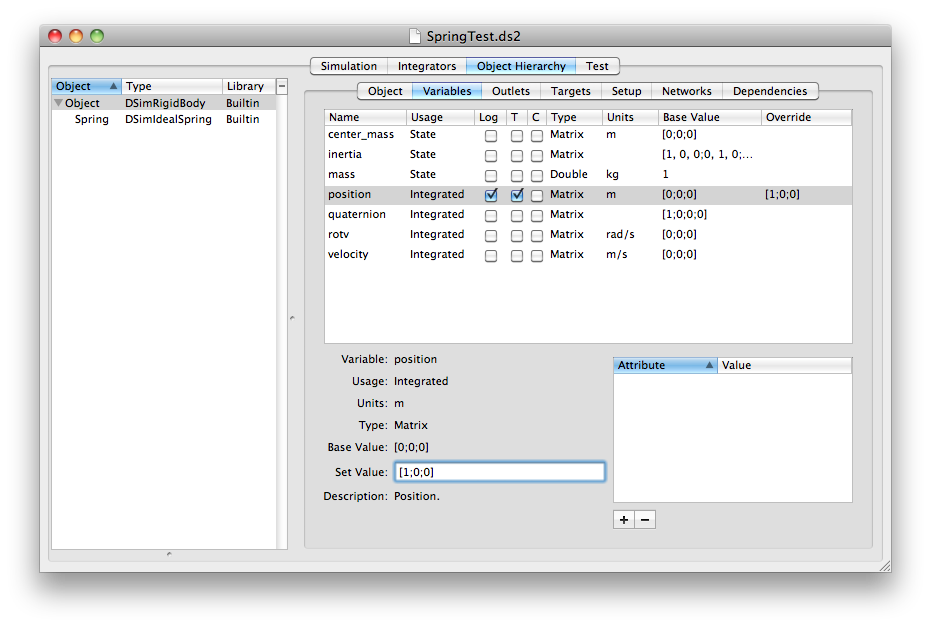

This is where we discuss the heart of DSim: building your simulation from your components. You can create a hierarchy of objects, make connections between those objects, and provide initialization data for your variables.
This area on the left is where you drag objects from your component library into a hierarchical list. You can rearrange them after dragging them on. Select an object to edit its data in the panels on the right.
This tab gives the model type (class) of the object. You can edit the component name and select an integrator function. The lower part of the tab provides an interface for assigning key/value pairs to the component.
A component can have an arbitrary number of key/value pairs (also known as attributes) assigned to it. These pairs are simply pairs of strings, and have meaning if a model class makes some use of the information. For instance, a component might set a model number; the code for the component may use that model number to determine a set of geometry data to load.
Each component in the hierarchy corresponds to a block of code in the setup file. The block starts with the line naming the component and specifying the bundle in which the model is located.
These are the published variables for the model class. For each parameter, you can view the name, usage, type, units, default (base) value, and a description, if these fields are defined in the model class. Click the check boxes to log a parameter's value to a file, set it as telemetry to be viewed in VisualCommander, or mark it as a command. A command can have its value set in the simulation from VisualCommander. You can override the initial value by typing a new value in the text box or column. Note the formatting for matrix entries, using square brackets, commas, and semicolons. Variables with overridden values each have a line in the setup file in the appropriate object or component block with a setValue tag.

Outlets are variables defined as pointers in the models. Each outlet must be associated with a target component which provides the variables. This tab lists any outlets for the component and provides an interface for linking them to targets. First select an outlet in the list. Select the source object and then the source variable from the popup menus. You can also disconnect an outlet using the button.
The outlet lines appear in the setup file with the tag connectOutlet.
The path to the parameter consists of the component hierarchy with components separated by a pipe (|) and the parameter separated by a colon. For instance if an object is connect to the position of another object, the setup file might have
<connectOutlet>
<variable>positionBody</variable>
<source>OtherObject|Gravity:positionBody</source>
</connectOutlet>
The Targets tab will list any variables in this component that are connected to outlets of other components.
The Setup tab enables you to specify custom setup parameters that are used by a model. This would be discussed in the model class's documentation. See the API for more information on processing setup commands during model initialization.
TBD
Sometimes in complex simulations, some models depend on values generated by other models during setup or during execution. You can specify any dependencies in this tab by dragging objects on from the list. DSim will keep track of all dependencies and use them to set the setup and execution order.
Copyright 2011  , all rights reserved.
, all rights reserved.
Return to DSim Manager Help Home